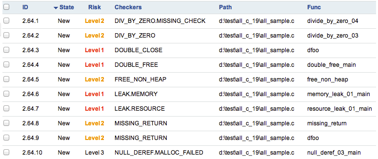
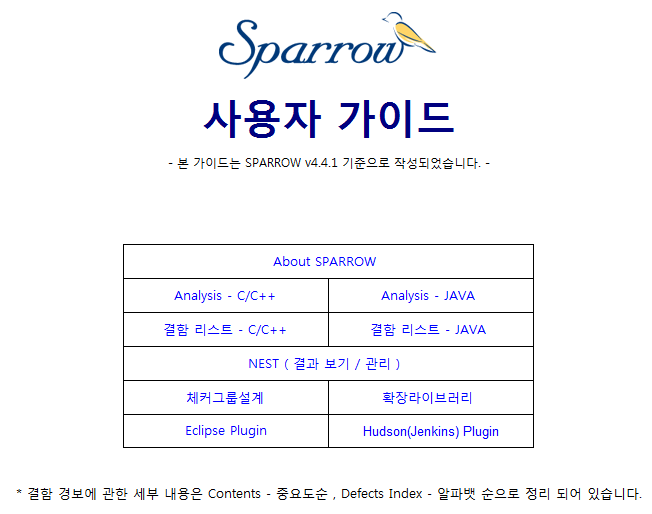

Release Name: SPARROW v4.4.1
Release Date: 2012/04/20
Features
● 체커 개선
● Defect List개선
● 엔진 개선
● 내부 동작 속도 개선
● 디버그 옵션 추가
● HTML 메뉴얼 개선
● 기타 개선
체커 개선
- 신규 체커 2건
Checker Name |
Description |
Note |
DOUBLE_CLOSE |
Double Free와 비슷하게 할당된 자원을 이미 한번 돌려준 후에 다시 한번 닫으려할 때 발생하는 오류입니다. |
기존 DOUBLE_FREE에서 발생한 부분에서 분리됨 |
INFORMATION_LEAK |
프로그램의 중요한 내부 정보 (환경 이나 사용자 관련 데이터)가 오류메시지나 다른 수단을 통해 노출되는 위험이 감지될 때 발생하는 오류입니다. |
[오류메시지를 통한 정보노출:시큐어코딩가이드] |
Defect List 개선
- Risk 별 Level 색 강조
DefectList에서 Risk 컬럼을 추가하였으며 Risk에 따라 색을 추가하였습니다.
Level 1 : 빨강 / Level 2 : 주황 / Level 3 ~5 : 검정

엔진 개선
- 윈도우 엔진 죽는 현상 수정
opus1, opus1pf, opus2에 관해서 윈도우에서 대용량 파일 소스 처리시 죽는 현상을 stacksize를 조절하여 해결
- 엔진 제어
엔진 프로세스를 PID를 통해 제어(kill) 할 수 있습니다.
- 엔진 타임아웃 설정
opus1타임 아웃을 지정하도록 변경하였습니다. sparrow.propeties 에서 아래의 항목을 수정하면 됩니다.
debug.opus1.kill.timeout=6000 (단위 ms)
- $tmp표현 감소
분석시 경로가 축약되는 $tmp표시를 대폭 줄여 정확히 나오게 변경하였습니다.
내부 동작 속도 개선
- plover 옵션 처리 개선
edg에서 들어오는 옵션중 성공한 옵션만 Plover로 전달합니다. edg가 실패하면 해당 전처리 파일은 plover가 작동 되지 않습니다.
- sed 처리 개선
sed 수행 후 sed리스트를 통해 다음번 분석시 sed리스트에 없는것만 sed를 수행합니다.
- Preset 강화
분석과 파싱에 필요한 항목을 세분화 하고 원하는 항목을 각각 선택하여 프리셋을 구성하도록 변경 하였습니다.
- Preset 세분화
GNU, AIX, HPUX, SUNOS 등을 추가하였습니다. 분석시 AIX,HPUX,SUNOS 와 같이 특별한 파싱옵션이 추가되야 하는 경우는 반드시 PRESET을 이용하여 분석 해야합니다.
디버그 옵션 추가
- 엔진 출처 옵션
분석시 --debug-enginename 를 수행하면 분석후 체커 옆에 엔진 바이너리명이 표시됩니다.
- 강제 sed옵션
분석시 --debug-sed를 수행하면 sed리스트와 관계 없이 무조건 sed를 수행 합니다.
HTML 메뉴얼 개선
- HTML 메뉴 세분화

기타 개선
- 프로그레스바 처리 개선
프로그레스바에 신규엔진의 동작 상황을 추가하였습니다.
- 업데이트 과정 세분화
업데이트 과정에 프로그레스를 추가 하였습니다.
- sparrow 폴더 백업
all/prep 로 분석시 sparrow폴더가 있을 경우 sparrow.bak로 백업한후 새로 분석을 합니다.
- 휘슬 매니저 구동시 업데이트
휘슬 매니저 처음 로그인시 업데이트 하도록 변경
- HPUX 후킹 모듈 개선
- WINCE 후킹 모듈 지원
Created with the Personal Edition of HelpNDoc: Single source CHM, PDF, DOC and HTML Help creation